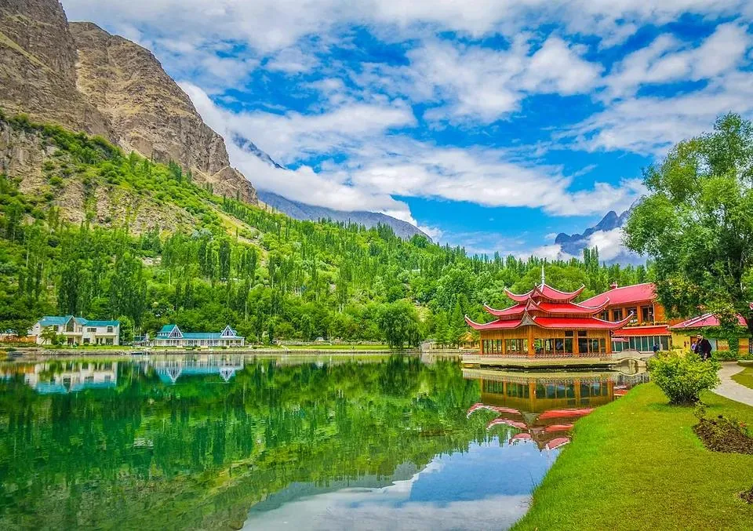

A 16-day journey through northern Pakistan can combine the valleys, lakes and mountain landscapes of the country’s north without turning every day into a long transfer. Exact routing depends on road conditions, season, starting point and how much time you want for walking or photography. Use this itinerary as a flexible framework, then confirm transport and overnight stops before booking.
A balanced 16-day route
Days 1–2: arrive and explore Islamabad, allowing time to recover and check travel arrangements. Days 3–4: travel toward Naran and Kaghan when the route is open. Day 5: visit the Lake Saif-ul-Malook area if access and weather permit. Days 6–7: continue toward Gilgit, with realistic allowances for road time. Days 8–10: explore Hunza and nearby viewpoints. Days 11–13: travel to Skardu and select local excursions. Days 14–15: begin the return journey with an overnight stop chosen for current road conditions. Day 16: keep as a buffer or return to Islamabad. This sequence may need to change with the season and available transport.
Choose the season before locking the route
High passes and some mountain roads are seasonal. Snow, landslides, heavy rain or road works can make a planned connection impractical. In winter, consider a shorter route focused on destinations that are accessible at that time rather than assuming every northern stop can be reached.
Plan realistic travel days
Distances on a map can be misleading in mountain terrain. Allow daylight for road travel, breaks and unexpected delays. Avoid scheduling a strenuous hike immediately after a long drive, and keep a flexible overnight stop in the plan.
Accommodation and transport
Decide whether the trip will use a private vehicle, a local driver, public transport or a mix. Confirm room availability, cancellation terms, vehicle suitability, fuel stops and what is included in any tour quote. Ask whether specialist local transport is needed for particular tracks or excursions.
What to pack
Bring layered clothing, rain protection, comfortable walking shoes, personal medication, sun protection, water bottles, offline maps, power banks and copies of important documents. Packing needs change considerably between summer valley travel and cold-weather trips.
Keep the itinerary flexible
Treat the plan as a guide rather than a guarantee. Leave room to stay longer somewhere you enjoy or to skip a stop when conditions are poor. A responsible operator should explain alternatives and communicate changes clearly.
Before you book
Share your dates, group size, comfort level, preferred pace and must-see places with your tour planner. Request a written itinerary showing driving days, overnight locations, inclusions, exclusions and the plan for weather-related changes.
Plan your Pakistan trip
Tell Past Enlighten your dates, group size, preferred pace and interests. Confirm current route access, inclusions and prices before finalising your plan.
Ask Past EnlightenTravel conditions, opening arrangements and prices can change. Verify current local information before departure.